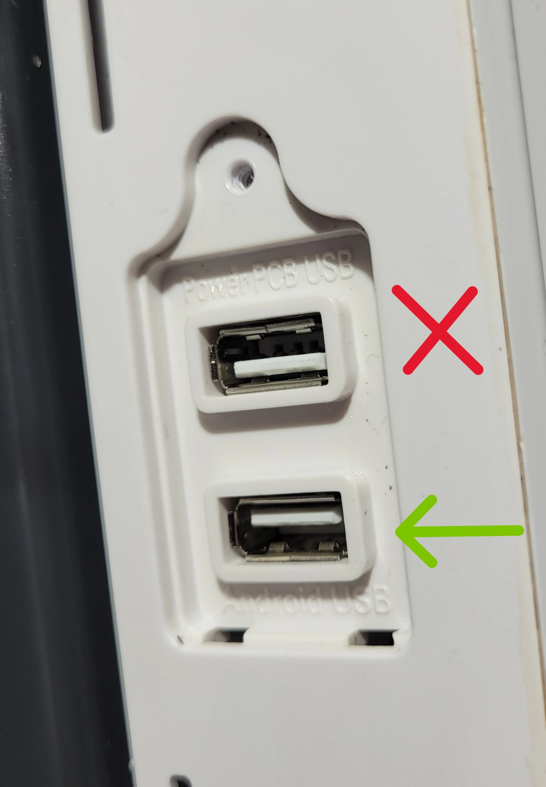

Installing Lidlomix Pro on the Connect step by step
This guide covers the Monsieur Cuisine Connect USB installer for Windows. Have your computer, installation package and service cable ready.
What you’ll need
- Have your Monsieur Cuisine Connect ready. The installer checks that your device is compatible with the package before making any changes.
- Have a Windows 10 or 11 computer with .NET Framework 4.8, the complete installer package and enough space for the recipe catalogues.
- Have a Torx TT10 bit or screwdriver ready for the service cover screw.
USB-A service cable
Use a service cable intended for the Connect’s Android USB port, with an identical male USB-A plug at each end. A 0.5 m cable is enough if the computer is right next to the Connect. A 1 m cable gives you more room.

The Monsieur Cuisine Smart and other models are still being tested. Support for these devices is planned and has yet to be confirmed.
USB installation
Extract the package
Extract the entire ZIP into one folder on your computer. Run Lidlomix-Pro-Instalator-USB.exe from that folder.
Connect the robot to the computer
Turn the Connect off and unplug it. Use a Torx TT10 bit to undo the screw on the underside of the base and remove the service cover. Connect the service cable to the computer and the Android USB socket. Plug the Connect back in, turn it on, unlock the screen and leave it idle.

Closed service cover on the underside of the Connect base. 
For installation, use only the Android USB socket indicated by the arrow. The cross marks the Power PCB USB socket. Start the installer
Click Start in the installer. If the robot asks you to allow USB debugging, confirm on its screen. Windows must detect the Android USB connection.
Keep the backup
The installer backs up the factory app’s installation files (APKs) before making changes. Keep the backup so you can restore the factory app if something goes wrong. Leave the cable connected until the installer confirms it has finished.
Check the first launch
Open the programmes and recipe catalogue, then choose your language in settings. To change the default startup screen, look for Home screen in Android settings.

Language selection on the robot

If installation stops
Use the installer button labelled Kopie i logi (Backups and logs) to find the run log and the factory app backup, if it was created. A full system restore requires a service procedure. In the forum, include the model, Windows version, step number and the installer message. Remove serial numbers and account details before pasting a log excerpt.
Discuss installation on the forum